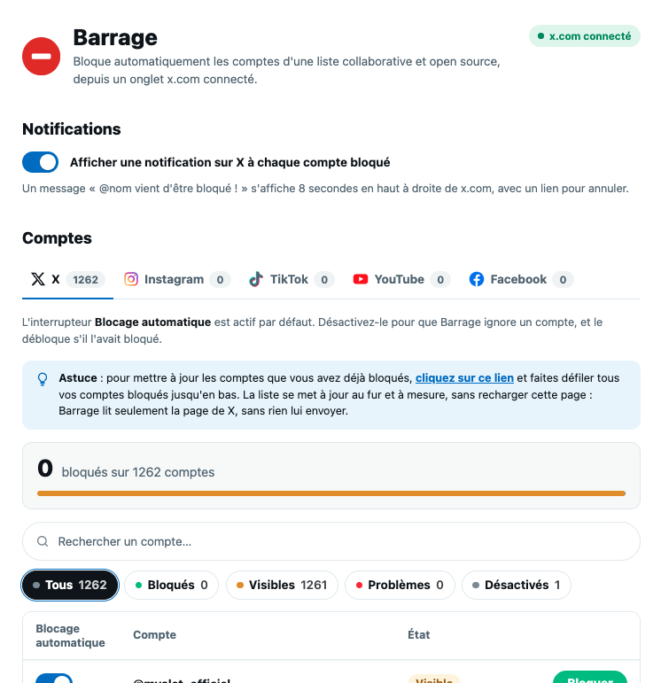

Au fur et à mesure
Un compte n'est bloqué que lorsqu'il apparaît dans votre fil.
Extension pour Chrome, Brave, Edge et tout navigateur Chromium
Barrage bloque automatiquement les comptes que vous ne voulez plus voir, à partir d'une liste collaborative et open source. Vous l'installez une fois, il travaille pour vous ensuite.
Gratuit et open source. Le code de l'extension et la liste des comptes sont publics, chacun peut les relire et y contribuer.

Ouvrez x.com avec votre compte connecté, Barrage fait le reste. Un compte repéré dans votre fil est masqué tout de suite, puis bloqué.
Un compte n'est bloqué que lorsqu'il apparaît dans votre fil.
Désactivez un compte de la liste, débloquez-le en un clic, et annulez depuis la notification affichée sur X.
Ajoutez vous-même des comptes à bloquer depuis la page d'options, en plus de la liste partagée. Ils restent dans votre navigateur.
La liste est maintenue sur GitHub. Pour ajouter un compte à la liste de la communauté, ouvrez une pull request sur le dépôt : elle est relue, puis intégrée pour tous les utilisateurs.
Barrage ne passe pas par le Chrome Web Store : on le charge en mode développeur. Comptez une minute.
Récupérez l'archive puis décompressez-la. Rangez le dossier Barrage dans un endroit où il restera : le navigateur en a besoin en permanence.
Menu ⋮ en haut à droite, puis Extensions et Gérer les extensions.
Plus rapide : tapez chrome://extensions dans la barre d'adresse (brave:// ou edge:// selon votre navigateur).
L'interrupteur se trouve en haut à droite de la page des extensions.
Le bouton apparaît en haut à gauche dès que le mode développeur est actif.
Choisissez le dossier décompressé à l'étape 1, celui qui contient le fichier manifest.json, puis validez.
Profitez d'un fil plus sain : Barrage veille en arrière-plan, vous n'avez plus qu'à scroller tranquille.
Open source
Le code de Barrage est ouvert : vous pouvez vérifier ce que fait l'extension avant de l'installer. La liste des comptes vit dans le même dépôt et évolue par pull requests, relues avant d'être intégrées.